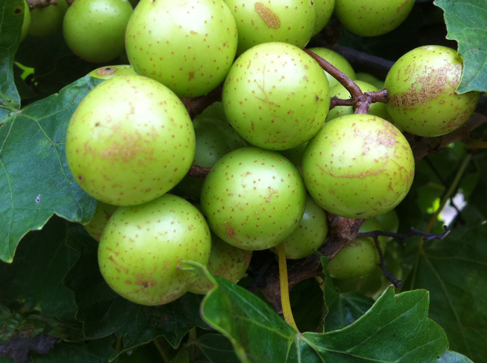
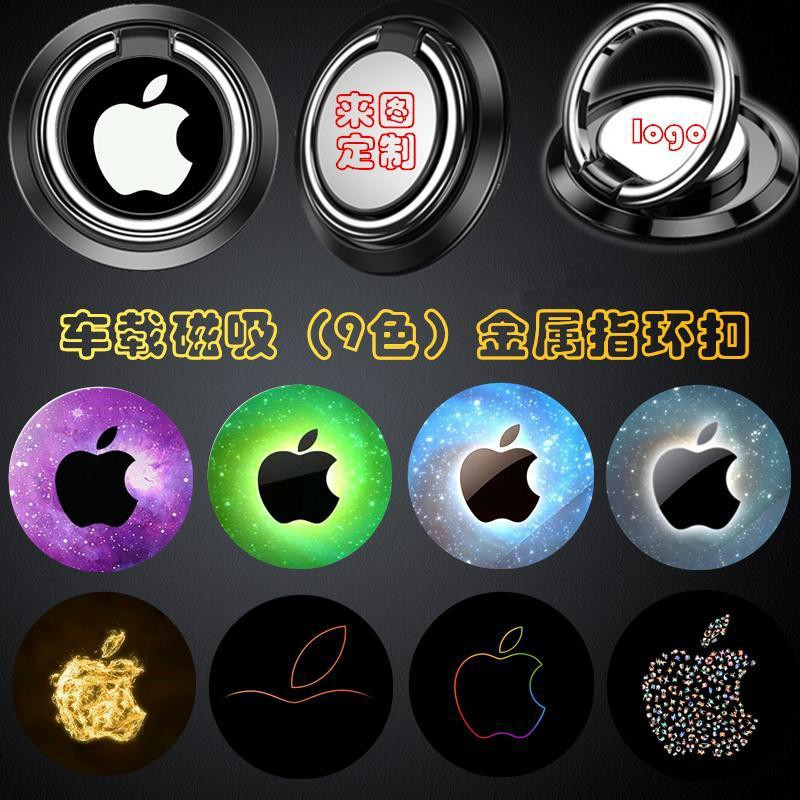
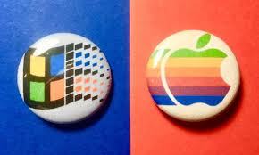

Learning keeps you in the lead. Get in-demand skills to impress anyone.
What to learn next.
Recommended for you
About Fruits
Fruits are important sources of vitamins and carbohydrates like fiber and sugar.
They are low in calories and naturally sweet. Fruits and their juices are good sources
of water, too. Different fruits contain different vitamins, so it is important to eat a
variety of fruits.

Ear buds hang from the crevices of your ear-folds, whereas in-ear headphones are
inserted directly into the ear canals. Start by situating the squishy tip gently in
your ear hole, over the canal. Don't push it in, just get it in place. Pull the left
earlobe down and push the tip into your ear canal.

Ear buds hang from the crevices of your ear-folds, whereas in-ear headphones are
inserted directly into the ear canals. Start by situating the squishy tip gently in
your ear hole, over the canal. Don't push it in, just get it in place. Pull the left
earlobe down and push the tip into your ear canal.
Bill Gates and Steve Jobs came together 21 years ago, when Microsoft agreed to
invest $150 million in Apple stock. The deal shocked Apple purists, but it helped put
Apple on a firm footing for a few reasons — and made its historic run possible in the
second Steve Jobs era.

About Fruits
Fruits are important sources of vitamins and carbohydrates like fiber and sugar.
They are low in calories and naturally sweet. Fruits and their juices are good sources
of water, too. Different fruits contain different vitamins, so it is important to eat a
variety of fruits.